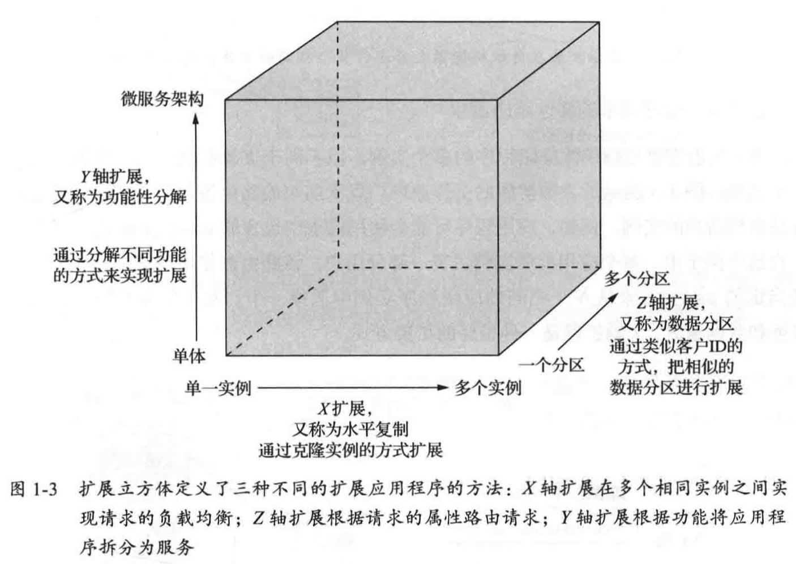
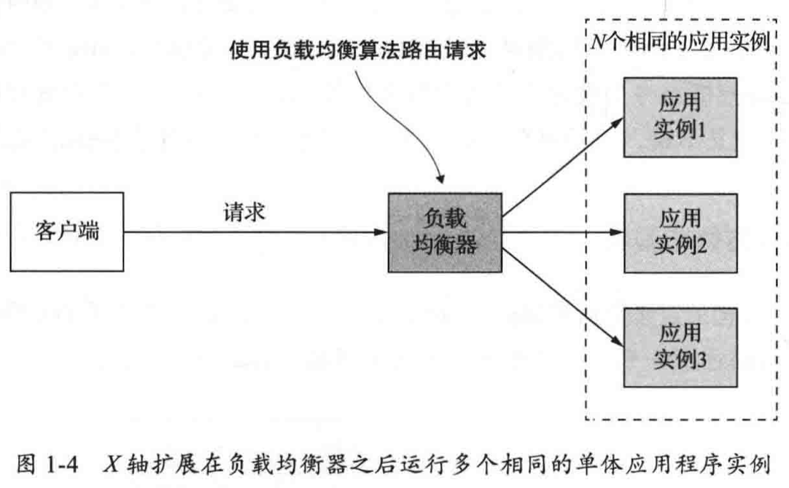
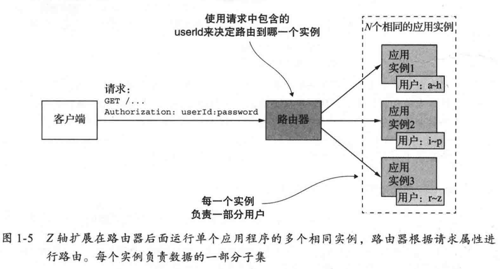
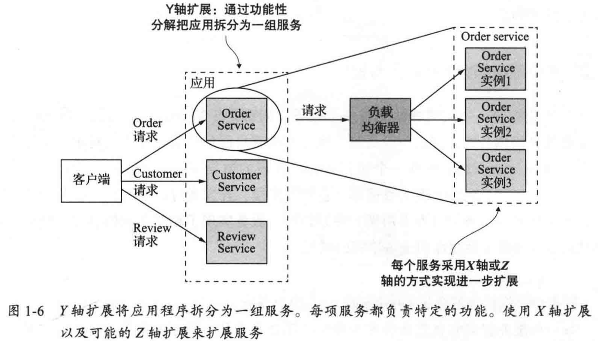

软件架构对功能性需求的影响
软件架构对功能性需求影响并不大，架构的重要性在于它影响了应用的非功能性需求，
扩展立方体

之前只听过垂直扩容和水平扩容，本书中将微服务比喻成一个立方体，X、Y、Z 三个轴表示对应用扩展的 3 种方式：
- X 轴扩展和我们之前了解的水平扩容意思相同
- 
- Z 轴扩展表示根据请求属性（如 userId）进行路由，作者称之为流量分区
- 
- Y 轴表示根据功能将请求路由到不同的服务，如订单服务、商品服务
- 
作者对微服务的定义
把应用程序功能性分解为一组服务的架构风格。
「两个披萨」原则
「两个披萨」原则是指某个事情的参与人数不能多到两个披萨饼还不够他们吃饱的地步。亚马逊CEO贝索斯认为事实上并非参与人数越多越好，他认为人数多不利于决策的形成，并会提高沟通的成本，这被称为「两个披萨」原则。
微服务好处
- 持续交付、持续部署
- 容易维护
- 独立部署
- 独立扩展
- 团队自治
- 新技术
- 容错性
微服务弊端
- 服务的拆分和定义
- 开发、测试和部署更困难
- 部署时需要协调更多开发团队
- 考虑什么阶段使用微服务架构
马拉法拉利比喻
采用微服务架构以后，如果仍旧沿用瀑布式开发流程，那就跟用一匹马来拉法拉利跑车没什么区别。如果你希望通过微服务架构来完成一个应用程序的开发，那么采用类似 Scrum 或 Kanban 这类敏捷开发和部署实践就是必不可少的。
人们对变化做出情绪化反应的三个阶段
- 结束、失落和放弃：当人们被告知某种变化，这类变化会把他们从舒适区中拉出，这类情绪开始滋生和蔓延。人们会念叨失去之前的种种好处。
- 中立区：处理新旧任务工作方式交替过程中，人们普遍会对新的工作方式无所适从。人们开始纠结并必须学习处理新工作的方式。
- 新的开始：最终阶段，人们开始发自内心地热情拥抱新的工作方式，并且开始体验到新工作方式所带来的种种好处。